1 Platforms, gates and measurement
\[ \newcommand{\ket}[1]{\left|#1\right\rangle} \newcommand{\bra}[1]{\left\langle#1\right|} \newcommand{\gate}[1]{\mathrm{#1}} \newcommand{\Tr}{\mathrm{Tr}} \]
On paper, a quantum algorithm is a circuit: gates on ideal qubits, followed by measurements. A real quantum computer is a physical device, whose physics decides which operations it can perform, between which qubits, how fast and how reliably. In this chapter, we look at this physical side and at what it means for the circuits we can run.
By the end of the chapter, you should be able to explain what a quantum computer needs from its qubits and how superconducting circuits and trapped ions provide it; why devices have different native gates, why \(Z\) rotations are usually free, and what limited connectivity costs; and how many shots an expectation value needs and how long they take.
1.1 Noisy qubits and fault tolerance
Every physical qubit is imperfect. Each gate has a small chance of going wrong, the stored quantum state degrades even when nothing is done to it, and measurements sometimes return the wrong result. These errors add up. If each gate fails with probability 0.1%, a circuit of a thousand gates runs without any error only about 37% of the time, since \(0.999^{1000} \approx e^{-1}\). Noise therefore limits the size of the circuits that a device can run usefully.
Preskill called the devices of this era NISQ devices, for noisy intermediate-scale quantum (Preskill 2018). Intermediate scale means tens to thousands of qubits, enough that many of their circuits are hard to simulate on a classical computer, but far from the millions of qubits that the best-known quantum algorithms need. Noisy means that their errors are not corrected.
Getting useful results from a NISQ device means working within the limit set by noise. Circuits are kept short, so that errors have little chance to build up. The quantities to keep small are the circuit’s depth, the number of layers of gates that must run one after another, and its number of two-qubit gates, the least reliable operations on current devices (Section 1.5). Each run of a circuit returns a single random outcome, so every quantity is estimated from many repetitions, called shots (Section 1.4.2). And error mitigation reduces the effect of the remaining noise on these estimates, without correcting the errors themselves, by running extra or modified circuits and combining their results. Error mitigation is not the same as error correction: it only works if the circuit does not accumulate too much error in the first place, and its price is running more shots. We come back to it later in the course.
Correcting errors is possible in principle. Quantum error correction stores each qubit of information redundantly in many physical qubits, which together form one logical qubit. Repeated checks on the physical qubits reveal errors without disturbing the stored information, so that the errors can be undone. This only helps if the physical qubits are good enough. Below a certain error rate per operation, the threshold, larger codes give lower logical error rates, as low as a computation requires, and the computer is called fault tolerant.
Fault tolerance is expensive. Useful algorithms are estimated to need of order a thousand physical qubits for every logical qubit, and around a million physical qubits in total (Fowler et al. 2012; Gidney 2025). Experiments are now crossing the threshold: in 2024, a superconducting device ran an error-correcting code whose logical error rate halved each time the code was made larger (Google Quantum AI and Collaborators 2025). Such experiments use a whole device to protect a single logical qubit, however, and useful computations still run on physical qubits. We come back to the stage in between, early fault tolerance, at the end of the course.
The cost of error correction is not only an increase in the number of physical qubits. A code protects stored information, but every gate on logical qubits must also be carried out without spreading errors, and only a small set of gates can be done this way at a low cost. Every other gate has to be built from this set, so the operations that are cheap on a NISQ device can be expensive on a fault-tolerant one, and the reverse. In the most studied codes, a CNOT between two logical qubits is relatively cheap. A single-qubit rotation by an arbitrary angle, which a NISQ device performs with a single pulse (Section 1.3.2), must instead be approximated by a sequence of tens to about a hundred protected gates, some of which need a costly extra procedure of their own (Ross and Selinger 2016; Litinski 2019). The cost of a NISQ circuit is dominated by its depth and its two-qubit gates, while the cost of a fault-tolerant circuit is often dominated by its number of rotations. Table 1.1 summarises the differences.
| NISQ | Fault tolerant | |
|---|---|---|
| Qubits | physical qubits | logical qubits, each encoded in many physical qubits |
| Errors | uncorrected; they accumulate with every operation | corrected, if the physical error rates are below the threshold |
| Circuit size | limited by noise | limited by the number of qubits and the run time |
| Cheap operations | single-qubit rotations at any angle | CNOT and a few other gates |
| Expensive operations | two-qubit gates | single-qubit rotations at arbitrary angles |
| Cost of a circuit | mainly its depth and number of two-qubit gates | mainly its number of rotations |
| Dealing with noise | short circuits, many shots, error mitigation | error correction |
| Status | available today | first demonstrations; useful machines still to be built |
This course focuses on NISQ devices. We will learn how noise affects their results, how error mitigation can reduce its effect, and which algorithms can be run on today’s devices.
1.2 Physical qubits
This section is a high-level introduction to the most common designs of two kinds of hardware, superconducting circuits and trapped ions. Quantum hardware is a very active field of research, and there are many variations on everything we describe here. The device physics is descriptive, and you are not expected to derive it. What matters later are its consequences for gates, connectivity and speed. Terms we leave unexplained are in the glossary; on the web version, hover over an underlined term to see its definition.
1.2.1 Requirements for a quantum computer
A qubit is a quantum system with two states, \(\ket{0}\) and \(\ket{1}\), that we can control. Quantum systems such as atoms and small electrical circuits can only take certain values of energy, their energy levels, and they usually have many more than two. Most qubits are therefore the two lowest energy levels of a larger system. The other levels are still there, and a qubit can end up in them by accident.
A universal, digital quantum computer is built by assembling many physical qubits and controlling them individually. DiVincenzo listed what this requires (DiVincenzo 2000):
- a scalable system of well-characterised qubits: their levels and interactions are known, and more qubits can be added;
- a way to prepare the qubits in a known state, usually \(\ket{0\cdots 0}\);
- a universal set of gates, usually rotations of single qubits together with an interaction between two qubits;
- a way to measure individual qubits;
- coherence times, the times for which the qubits keep their quantum state, that are long compared with the duration of a gate.
These are the DiVincenzo criteria. Two further criteria concern sending qubits between distant devices, which we will not need.
One property of measurement matters well before Section 1.4, where readout is described in detail. On the platforms in this chapter, a measurement asks each qubit whether it is in \(\ket{0}\) or in \(\ket{1}\): it projects the qubit onto one of these two states and returns one bit. This is a measurement in the computational basis, also called the \(Z\) basis, since \(\ket{0}\) and \(\ket{1}\) are the eigenstates of \(Z\). To measure in another basis, we first rotate that basis onto the computational one.
The requirements pull in opposite directions. A qubit keeps its state longest when it is well isolated from its surroundings, since every interaction with the environment disturbs it. Yet to apply gates and to measure, we have to interact with it, strongly and quickly. Every platform is a compromise between isolation and control, and this compromise explains many of the numbers in this chapter.
1.2.2 Energy levels, frequencies and pulses
Quantum mechanics links energy and frequency. An energy difference \(E\) between two levels corresponds to a frequency \(f = E/h\), where \(h\) is Planck’s constant, and radiation at that frequency drives transitions between the two levels, while radiation at other frequencies hardly affects them. This selectivity is called resonance, and on most platforms it is how qubits are controlled.
A pulse is a short burst of radiation at a chosen frequency, the carrier frequency, switched on and off smoothly. Its shape over time, the envelope, is often close to a Gaussian (Figure 1.1 a). Superconducting qubits are driven by microwave pulses, trapped ions by laser or microwave pulses. A qubit with transition frequency \(f_q\) oscillates at that frequency too, and in a simplified picture, the effect of a pulse on the qubit is the product of the pulse with this oscillation, added up over time. If the two frequencies are equal, the product keeps the same sign, and its effect builds up as long as the pulse lasts (Figure 1.1, left, b and c). The result is a rotation of the qubit, by an angle proportional to the area under the envelope. If the frequencies differ, the product alternates in sign, its contributions cancel, and the qubit is left almost unchanged. A pulse at the frequency of one qubit therefore acts on that qubit, and hardly on qubits with other frequencies. Section 1.3.2 shows how the shape and timing of a pulse set the rotation.
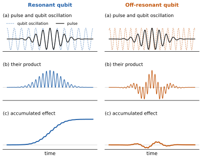
1.2.3 Superconducting qubits
A superconducting qubit is a small electrical circuit on a chip. The chip is fabricated like a conventional microchip: in a clean room, thin layers of superconducting metal are deposited on it and etched into shape (Figure 1.3). Once cooled, its metal becomes superconducting. Current then flows without resistance, so no energy is lost as heat, and the circuit behaves as a quantum system with discrete energy levels; we treat this part as a black box. A simple circuit of this kind has evenly spaced levels, like a mass on a spring (Figure 1.2, left). That makes it useless as a qubit, because a pulse at the frequency \(f_{01}\) of the \(\ket{0} \to \ket{1}\) transition is just as resonant with \(\ket{1} \to \ket{2}\), \(\ket{2} \to \ket{3}\) and so on. A circuit element called a Josephson junction makes the spacing uneven. In the most common design, the transmon, the \(\ket{1} \to \ket{2}\) transition is a few percent lower in frequency than the qubit transition (Figure 1.2, right), so a pulse at \(f_{01}\) drives only the qubit.
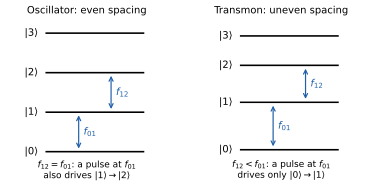
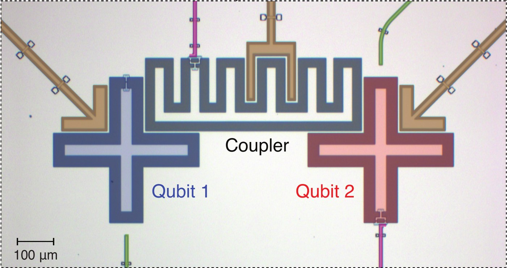
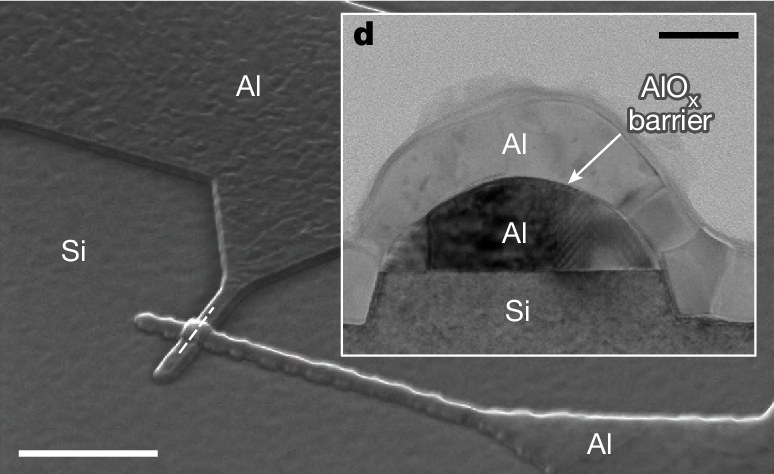
Transmon frequencies are typically 4-6 GHz, in the microwave range. At room temperature, the thermal energy is about a thousand times larger than \(hf\), so heat alone would excite the qubit at random. Superconducting chips therefore sit in a dilution refrigerator at about 10 mK, a hundredth of a degree above absolute zero (Exercise 1.1), and cables bring the microwave pulses down to them from electronics at room temperature.
The cold also prepares the qubits. At 10 mK, a qubit left alone loses its energy and falls into \(\ket{0}\) within a few hundred microseconds. This relaxation is a source of noise during a computation (Section 1.5), but between runs it initialises the qubits: we simply wait. A faster approach to initialisation is active reset: measure the qubit (Section 1.4.1) and apply an \(X\) gate if the result is 1.
Superconducting qubits are fast. A transmon is large for a quantum system, a fraction of a millimetre across, and it behaves like a small antenna that couples strongly to microwaves, so a pulse of a few tens of nanoseconds is enough for a single-qubit gate. The same antenna would pick up any stray radiation, so the chip is shielded, inside a metal package and the nested shields of the refrigerator, and its control lines are heavily filtered. Ideally, these lines are the qubit’s only contact with the outside world. The shielding is never perfect, and the quantum state of a qubit typically survives for tens to hundreds of microseconds.
Each qubit has its own frequency, and this is how the qubits on a chip are addressed separately. Every qubit usually has its own control line, but part of a pulse leaks to the neighbouring qubits, and coupled qubits feel each other’s drive. Neighbouring qubits are therefore given different frequencies, so that a pulse meant for one of them is off resonance for the others (Figure 1.1). In many designs, the frequency can also be tuned. The Josephson junction is then replaced by a small loop with two junctions, and a magnetic field through the loop, set by the current in a nearby control line, changes the frequency of the qubit. Tuning lets the electronics move qubits towards each other in frequency and away again, which is one way to switch on a two-qubit gate.
Fabrication is never perfectly precise, so no two qubits come out identical. Each has its own frequency, its own coherence time and its own error rates. Every pulse must therefore be calibrated: its frequency, strength and duration are measured and adjusted, qubit by qubit and pair by pair, in a long sequence of automated experiments. The properties of the qubits also drift, over hours to days, so calibration is repeated regularly, and providers publish the resulting calibration data for each qubit (Section 1.5).
Two qubits can interact only if they are coupled, directly through a capacitor or through a small circuit between them, a coupler (Figure 1.3). The couplings are built into the chip, so which pairs can interact is fixed when the chip is made (Section 1.3.6). A coupling makes an interaction possible, and the electronics decide when it acts. Like a qubit and a pulse, two coupled qubits exchange energy efficiently only when their frequencies match. While their frequencies are kept apart, or the coupler is tuned to cancel the coupling, they hardly interact. A two-qubit gate switches the interaction on for a short time, by tuning the qubits or the coupler, or by driving one of the qubits (Section 1.3.2). The interaction never switches off completely, and what remains is a source of errors called crosstalk.
Exercise 1.1 (Thermal excitation) In thermal equilibrium at temperature \(T\), the excited and ground states of a qubit with frequency \(f\) are populated in the ratio \(p_1/p_0 = e^{-hf/k_B T}\) (the Boltzmann factor), where \(k_B\) is Boltzmann’s constant. Use \(h/k_B \approx 0.048\) K/GHz.
Compute \(p_1/p_0\) for a 5 GHz qubit at room temperature (300 K), at 1 K and at 10 mK.
Below which temperature is \(p_1/p_0\) smaller than \(10^{-3}\)?
Hint
Take the logarithm of both sides.
1.2.4 Trapped ions
A trapped-ion qubit is a single ion, an atom with one electron removed, typically of ytterbium, barium or calcium. The electrons of an atom can only be in certain states, each with its own energy. These are the atom’s internal energy levels, as opposed to the motion of the atom as a whole, which will also matter below. Two of these levels form the qubit. All ions of an element are exactly the same, so, unlike fabricated circuits, the qubits of an ion-trap computer are identical by nature. As a consequence, they all have the same frequency, and a pulse cannot select one qubit by its frequency. Instead, most designs aim a laser beam at a single ion (Figure 1.5). In exchange, calibration is simpler, since all qubits share their frequency and most of their properties.
The ions are held in vacuum by electric fields in an ion trap, lined up in a chain a few micrometres apart, and laser beams slow them down until they are almost at rest (laser cooling). Another laser pulse then prepares each ion in \(\ket{0}\) within microseconds (optical pumping). Laser beams, or in some designs microwaves, also drive the gates. The qubit levels can be chosen so that stray magnetic fields and other disturbances hardly affect them, and trapped-ion qubits keep their quantum state for a second or more, thousands of times longer than superconducting qubits. Figure 1.4 shows a trap chip and a chain of ions.
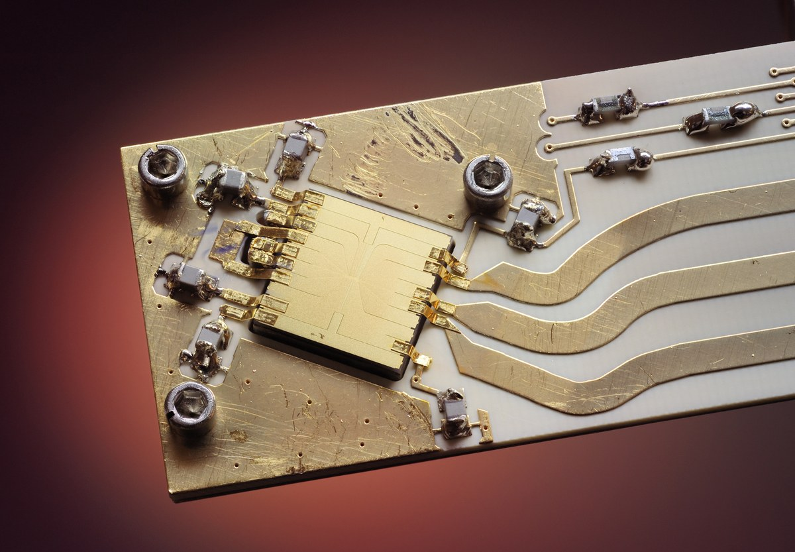
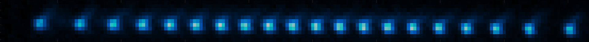
The ions are charged and repel each other, so the chain behaves like a row of balls joined by springs (Figure 1.5). Push one ion, and the whole chain starts to vibrate. Like the internal energy of an atom, the energy of these vibrations comes in discrete units, called phonons. Every ion takes part in the same vibrations, so they act as a shared channel, the phonon bus, through which any ion can interact with any other. The two-qubit gates are built by exploiting this phonon bus, so they can be applied to any pair of qubits: the connectivity is all-to-all (Section 1.3.6).
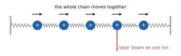
This comes at the cost of speed. Gates that use the phonon bus take from tens of microseconds to about a millisecond, roughly a thousand times longer than superconducting gates, and they become slower and harder to control as the chain grows. To scale up, some devices, such as Quantinuum’s, divide the trap into zones and move ions between them, bringing the two ions of each gate together (QCCD).
1.2.5 Other platforms
Several other platforms are developing quickly, following the same recipe of a two-level system, a way to drive it, an interaction between qubits and a readout. In neutral-atom devices, uncharged atoms are held, and can be moved, by tightly focused laser beams (optical tweezers), and they interact when lasers excite them to very large Rydberg states; arrays of hundreds to thousands of atoms have been built (Henriet et al. 2020). Photonic devices carry qubits on particles of light, which hardly interact with their surroundings but, for the same reason, hardly with each other either, so their entangling operations succeed only some of the time (Slussarenko and Pryde 2019). Spin qubits use the spin of single electrons trapped in tiny semiconductor structures (quantum dots); they can be made with the techniques of the chip industry, but current devices have at most a few tens of qubits (Burkard et al. 2023). Table 1.2 compares the five platforms.
| Platform | Qubit | Two qubits interact through | Strengths | Main limitations |
|---|---|---|---|---|
| Superconducting | energy levels of a circuit on a chip | couplings built into the chip | fast gates; mature fabrication technology | short coherence; fixed connectivity; qubits not identical |
| Trapped ions | energy levels of an ion | shared vibrations of the chain | identical qubits; long coherence; any pair can interact | slow gates; long chains are hard to control |
| Neutral atoms | energy levels of an atom | excitation to large Rydberg states | many qubits; atoms can be rearranged | slow; atoms get lost and must be replaced |
| Photonics | a photon | interference and detection | little decoherence; photons travel far | entangling operations often fail; photons get lost |
| Spin qubits | spin of an electron | neighbouring electrons | very small; chip-industry fabrication | few qubits so far; qubits not identical |
1.3 Native gates and connectivity
The circuits we write can use any gate that is convenient. A device, however, implements only a small set of native gates, each one a calibrated pulse or a short sequence of pulses, and it applies two-qubit gates only between pairs of qubits that are physically coupled. An additional step, compilation, translates every circuit into these native operations. This section explains which gates are native and why, and what the translation costs.
1.3.1 Pauli rotations
Recall the Pauli matrices \[ X = \begin{pmatrix} 0 & 1 \\ 1 & 0 \end{pmatrix}, \qquad Y = \begin{pmatrix} 0 & -i \\ i & 0 \end{pmatrix}, \qquad Z = \begin{pmatrix} 1 & 0 \\ 0 & -1 \end{pmatrix}. \] They are Hermitian and square to the identity, \(X^2 = Y^2 = Z^2 = I\). Any two different Pauli matrices anticommute, for example \(XZ = -ZX\), and the product of two of them is the third, up to a factor: \(XY = iZ\), \(YZ = iX\) and \(ZX = iY\). On several qubits, we combine them with tensor products.
Definition 1.1 (Pauli string) A Pauli string on \(n\) qubits is a tensor product \(P = P_1 \otimes P_2 \otimes \cdots \otimes P_n\) with each \(P_j \in \{I, X, Y, Z\}\). We often drop the tensor product signs and write, for example, \(ZZ\) or \(XIY\).
A Pauli string is again Hermitian, and it squares to the identity, because the square of a tensor product is the tensor product of the squares: \(P^2 = P_1^2 \otimes \cdots \otimes P_n^2 = I\). This one property gives a closed formula for the exponential of \(P\). Expand the exponential as a power series. Even powers of \(P\) are the identity, \(P^{2m} = I\), and odd powers are \(P^{2m+1} = P\), so the series splits into two: \[ e^{-i\theta P/2} = \sum_{m=0}^{\infty} \frac{(-1)^m}{(2m)!}\left(\frac{\theta}{2}\right)^{2m} I \;-\; i \sum_{m=0}^{\infty} \frac{(-1)^m}{(2m+1)!}\left(\frac{\theta}{2}\right)^{2m+1} P . \] These are the power series of the cosine and the sine, so \[ e^{-i\theta P/2} = \cos\frac{\theta}{2}\, I - i \sin\frac{\theta}{2}\, P . \tag{1.1}\] The derivation used only \(P^2 = I\), so Equation 1.1 holds for any operator with that property. Such operators are called involutory. For Hermitian operators, like all those in this chapter, being involutory is the same as being a reflection: the eigenvalues are \(\pm 1\), so the operator flips the sign of one subspace and leaves the orthogonal subspace unchanged.
Applied to single Pauli matrices, Equation 1.1 gives the familiar rotations of a qubit about the axes of the Bloch sphere, for example \[ R_X(\theta) = e^{-i\theta X/2} = \begin{pmatrix} \cos\frac{\theta}{2} & -i\sin\frac{\theta}{2} \\ -i\sin\frac{\theta}{2} & \cos\frac{\theta}{2} \end{pmatrix}, \qquad R_Z(\theta) = e^{-i\theta Z/2} = \begin{pmatrix} e^{-i\theta/2} & 0 \\ 0 & e^{i\theta/2} \end{pmatrix}. \tag{1.2}\] Rotations about two different axes are enough to build any single-qubit gate. Up to a global phase, every single-qubit unitary can be written as \(R_Z(\alpha)\,R_Y(\beta)\,R_Z(\gamma)\) for some angles (Nielsen and Chuang 2010, sec. 4.2).
Applied to the two-qubit Pauli string \(Z \otimes Z\), Equation 1.1 gives
\[ R_{ZZ}(\theta) = e^{-i\theta\, Z\otimes Z/2} = \begin{pmatrix} e^{-i\theta/2} & 0 & 0 & 0 \\ 0 & e^{i\theta/2} & 0 & 0 \\ 0 & 0 & e^{i\theta/2} & 0 \\ 0 & 0 & 0 & e^{-i\theta/2} \end{pmatrix} \tag{1.3}\]
in the basis \(\ket{00}, \ket{01}, \ket{10}, \ket{11}\). \(R_{ZZ}\) applies a phase that depends only on whether the two bits are equal or different, their parity. That is why it can be built from two CNOTs and a single \(R_Z\) (Figure 1.6). The first CNOT writes the parity of the two bits into the second qubit, \(R_Z\) applies the phase, and the second CNOT undoes the first. Section 1.3.4 extends this construction to rotations about any Pauli string, built from native gates.
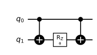
Equation 1.1 will come back several times in this course, in circuits for time evolution, which are built from Pauli rotations, and in the parameter-shift rule, which gives exact gradients of variational circuits.
1.3.2 Physical implementation of gates
The native gates of a qubit platform are set by the physical mechanisms that control its qubits. This section describes these mechanisms, for single-qubit and for two-qubit gates, and the gates they produce.
A single-qubit gate on a superconducting qubit is a microwave pulse at the qubit’s frequency, a few tens of nanoseconds long (Section 1.2.2). The area under the envelope of the pulse, set by its strength and duration, sets the rotation angle \(\theta\) (Figure 1.1). The phase of the pulse, that is, the timing of the microwave oscillation relative to a reference clock in the control electronics, sets the axis of rotation, which lies in the \(xy\)-plane of the Bloch sphere at an angle \(\varphi\) from the \(x\)-axis. Delaying the oscillation by a fraction of its period turns the axis by the same fraction of a full turn. Laser or microwave pulses on trapped ions work in the same way. On both platforms, the natural single-qubit gate is therefore a rotation by any angle about any axis in the \(xy\)-plane, which IQM calls \(\gate{PRX}\):
\[ \gate{PRX}(\theta,\varphi) = \exp\!\left[-i\frac{\theta}{2}\left(\cos\varphi\, X + \sin\varphi\, Y\right)\right]. \tag{1.4}\] The operator \(\cos\varphi\, X + \sin\varphi\, Y\) squares to the identity (Exercise 1.2), so Equation 1.1 applies to it too. For \(\varphi = 0\) and \(\varphi = \pi/2\), PRX reduces to \(R_X(\theta)\) and \(R_Y(\theta)\). Figure 1.7 shows how \(\gate{PRX}\) rotates the Bloch sphere. Rotations about the \(z\)-axis are missing from this family, and Section 1.3.5 shows that they need no pulse at all.
Exercise 1.2 (The PRX gate)
Show that \((\cos\varphi\, X + \sin\varphi\, Y)^2 = I\).
Hint
Expand the square, and use that \(X\) and \(Y\) anticommute.
Write \(\gate{PRX}(\theta,\varphi)\) as a \(2\times 2\) matrix.
Hint
Use Equation 1.1, which applies because of (a).
Check that \(\gate{PRX}(\theta,0) = R_X(\theta)\) and \(\gate{PRX}(\theta,\pi/2) = R_Y(\theta)\). Which rotation is \(\gate{PRX}(\theta,\pi)\)?
During a two-qubit gate, the two qubits should interact, and at all other times they should not (Section 1.2.3). Superconducting devices switch the interaction on in three main ways, and each gives a different native gate.
- Tuning two qubits into resonance. When two coupled qubits have the same frequency, an excitation moves back and forth between them: \(\ket{01}\) turns into \(\ket{10}\) and back again, while \(\ket{00}\) and \(\ket{11}\) are unchanged. A complete transfer gives the iSWAP gate, which exchanges \(\ket{01}\) and \(\ket{10}\) and multiplies both by \(i\). Stopping halfway gives its square root, \(\sqrt{\gate{iSWAP}}\).
- Using the third level. A transmon has a third level, \(\ket{2}\), not far above the qubit levels (Figure 1.2). The frequencies can be tuned so that the two-qubit state \(\ket{11}\) has the same energy as \(\ket{20}\), in which the first transmon holds both excitations. These two states then exchange instead. After one complete exchange, there and back, \(\ket{11}\) returns with its sign flipped (up to phases on the single qubits, which are easy to correct), while \(\ket{00}\), \(\ket{01}\) and \(\ket{10}\), which have no partner at the same energy, are unchanged. This is the controlled-Z gate, CZ, which flips the sign of \(\ket{11}\) only. On most current devices, a tunable coupler between the qubits switches the interaction, and CZ is the most common native gate.
- Driving one qubit at its neighbour’s frequency. IBM’s older Eagle devices, retired in 2026, have qubits with fixed frequencies and couplings that are always on. A pulse on one qubit at the frequency of its neighbour (cross-resonance) makes the neighbour rotate about its \(x\)-axis, in a direction that depends on the state of the first qubit: a rotation generated by \(Z\otimes X\). In practice, it is applied as a gate called ECR, for echoed cross-resonance, which equals a CNOT up to single-qubit gates.
On trapped ions, laser beams on two ions couple their qubit states to the shared vibrations of the chain, the phonon bus of Section 1.2.4. The light pushes each ion with a force that depends on its qubit state, so the chain vibrates in a way that depends on both qubits, and through this vibration the two qubits interact. At the end of the gate the vibration returns to its starting state, so that it carries away no information about the qubits. This Mølmer-Sørensen gate is a rotation generated by \(X \otimes X\), of the form of Equation 1.1, with an angle set by the duration and strength of the laser pulses. It is available at any angle, from small rotations up to a maximally entangling one, and between any pair of ions in the chain. Combined with single-qubit rotations, it gives \(R_{ZZ}(\theta)\) at any angle, the native two-qubit gate of current trapped-ion devices.
1.3.3 Native gate sets
Table 1.3 lists the native gates of some current devices. Names and details change with each hardware generation, but the pattern stays the same: a continuous family of single-qubit rotations, and one or a few entangling gates. Together they are universal, so any circuit can be compiled into them, at the cost of extra gates.
| Device family | Single-qubit | Two-qubit |
|---|---|---|
| IQM (superconducting) | \(\gate{PRX}(\theta,\varphi)\) | CZ; on star devices, also MOVE to and from the central resonator |
| IBM (superconducting) | \(\sqrt{X}\), \(X\); experimental: \(R_X(\theta)\) | CZ (Heron, Nighthawk); ECR on the retired Eagle devices; experimental: \(R_{ZZ}(\theta)\) |
| Google (superconducting) | PhasedXZ | CZ (Willow); \(\sqrt{\gate{iSWAP}}\) and others on the older Sycamore |
| Quantinuum (trapped ions) | \(R_{xy}(\theta,\varphi)\) | \(R_{ZZ}(\theta)\), any angle |
| IonQ (trapped ions) | GPi(\(\varphi\)), GPi2(\(\varphi\)) | MS (Aria), ZZ(\(\theta\)) (Forte), any angle |
The single-qubit gates in the table are rotations about axes in the \(xy\)-plane under different names, in one case followed by a \(Z\) rotation:
- \(\sqrt{X}\) and \(X\) (IBM) are \(R_X(\pi/2)\) and \(R_X(\pi)\), up to a global phase; IBM’s Heron devices also offer \(R_X(\theta)\) at any angle, as an experimental option;
- PhasedXZ (Google) is an \(xy\)-plane rotation followed by a \(Z\) rotation;
- \(R_{xy}(\theta,\varphi)\) (Quantinuum, also called U1q) is \(\gate{PRX}(\theta,\varphi)\) under another name;
- GPi(\(\varphi\)) and GPi2(\(\varphi\)) (IonQ) are \(\gate{PRX}(\pi,\varphi)\) and \(\gate{PRX}(\pi/2,\varphi)\), up to a global phase. IonQ measures angles in turns, so that an angle of 1 is a full turn, \(2\pi\).
The two-qubit gates are either fixed gates or rotations with an adjustable angle. The fixed ones are CZ, \(\sqrt{\gate{iSWAP}}\) and ECR. In the basis \(\ket{00}, \ket{01}, \ket{10}, \ket{11}\), \[ \gate{CZ} = \begin{pmatrix} 1&0&0&0\\ 0&1&0&0\\ 0&0&1&0\\ 0&0&0&-1 \end{pmatrix}, \qquad \sqrt{\gate{iSWAP}} = \begin{pmatrix} 1&0&0&0\\ 0&\frac{1}{\sqrt2}&\frac{i}{\sqrt2}&0\\ 0&\frac{i}{\sqrt2}&\frac{1}{\sqrt2}&0\\ 0&0&0&1 \end{pmatrix}, \] and ECR equals a CNOT up to single-qubit gates on both qubits. The adjustable ones are \(R_{ZZ}(\theta)\) of Equation 1.3, IonQ’s ZZ(\(\theta\)), which is the same gate with its angle in turns, and the Mølmer-Sørensen gate MS, generated by \(X \otimes X\). With an adjustable angle, an entangling rotation of any strength is a single native gate, which saves gates in circuits built from Pauli rotations.
1.3.4 Compiling into native gates
Compiling a circuit into native gates relies on an identity that we will use several times: conjugating an exponential conjugates its exponent, \[ U e^{A}\, U^\dagger = e^{U A U^\dagger} \tag{1.5}\] for any unitary \(U\) and any square matrix \(A\). To see this, expand both sides as power series: the inner factors \(U^\dagger U = I\) cancel in \((UAU^\dagger)^k = U A^k U^\dagger\). For a Pauli rotation, Equation 1.5 says that \(U e^{-i\theta P/2} U^\dagger = e^{-i\theta\, UPU^\dagger/2}\): conjugated by \(U\), a rotation about \(P\) becomes a rotation about \(UPU^\dagger\), by the same angle. To rotate about a long Pauli string, it is therefore enough to find a circuit \(U\) of native gates that turns a simple Pauli matrix, such as \(X\) on a single qubit, into that string.
Two kinds of conjugation do the job. First, single-qubit rotations turn one Pauli matrix into another; for example, \(R_Y(\pi/2)\) turns \(Z\) into \(X\), and \(R_X(-\pi/2)\) turns \(Z\) into \(Y\) (Exercise 1.3). Second, CZ attaches a \(Z\) to an \(X\) on the other qubit: \[ \gate{CZ}\,(I\otimes X)\,\gate{CZ} = Z\otimes X . \] To check this, apply both sides to a basis state \(\ket{ab}\). On the left, the first CZ gives a sign \((-1)^{ab}\), \(X\) flips \(b\), and the second CZ gives a sign \((-1)^{a(1-b)}\), so the result is \((-1)^{a}\ket{a,1-b}\), which is the action of \(Z \otimes X\). Each further CZ on the same qubit attaches one more \(Z\): writing \(\gate{CZ}_{jk}\) for a CZ on qubits \(j\) and \(k\), and labelling single-qubit Paulis by their qubit, conjugation by \(\gate{CZ}_{13}\gate{CZ}_{23}\) turns \(X_3\) into \(Z_1 Z_2 X_3\). Single-qubit conjugations then turn each factor into the Pauli matrix we need. Figure 1.8 shows the result for \(P = Z\otimes Y\otimes X\). Every gate in it is native on a device with PRX and CZ, since \(R_X(\alpha) = \gate{PRX}(\alpha, 0)\).
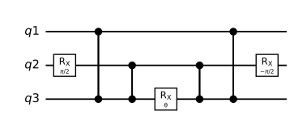
A rotation about a Pauli string on \(k\) qubits costs \(2(k-1)\) CZs this way, the same number of two-qubit gates as the CNOT construction of Figure 1.6. In Figure 1.8, all CZs act on the qubit that carries the rotation, which suits a device where that qubit is coupled to all the others. On a line of qubits, a chain of CNOTs between neighbours collects the parity step by step instead, and each CNOT is one CZ between two single-qubit rotations (Exercise 1.6).
Exercise 1.3 (Turning one Pauli into another) Let \(P\) and \(Q\) be Pauli strings that anticommute, \(PQ = -QP\).
Show that \(e^{-i\alpha P/2}\, Q\, e^{i\alpha P/2} = \cos\alpha\, Q - i\sin\alpha\, PQ\).
Hint
Write both exponentials with Equation 1.1, and use \(PQP = -Q\).
Show that \(R_Y(\pi/2)\) turns \(Z\) into \(X\), and that \(R_X(-\pi/2)\) turns \(Z\) into \(Y\).
Hint
Use (a), and the products of Pauli matrices.
Check that the circuit of Figure 1.8 implements \(e^{-i\theta\, Z\otimes Y\otimes X/2}\).
Hint
Use Equation 1.5, the identity for CZ in the text, and (b).
Draw a circuit of CZ gates and \(R_X\) or \(R_Y\) rotations for \(R_{ZZ}(\theta)\), and compare it with Figure 1.6.
Hint
Start from \(R_X(\theta)\) on the second qubit, conjugate it by CZ, then turn the remaining \(X\) into \(Z\).
1.3.5 Virtual Z gates
\(\gate{PRX}\) contains no rotations about the \(z\)-axis, yet circuits are full of them, for example in the decomposition \(R_Z(\alpha)\,R_Y(\beta)\,R_Z(\gamma)\) of a general single-qubit gate (Section 1.3.1) and in many parametrised gates of algorithms. On most devices, superconducting and trapped-ion alike, \(Z\) rotations are implemented without any pulse, as virtual Z gates. The trick follows from Pauli algebra.
Conjugation by a \(Z\) rotation rotates \(X\) and \(Y\) within the \(xy\)-plane: \[ R_Z(\alpha)\, X\, R_Z(\alpha)^\dagger = \cos\alpha\, X + \sin\alpha\, Y, \qquad R_Z(\alpha)\, Y\, R_Z(\alpha)^\dagger = \cos\alpha\, Y - \sin\alpha\, X \] (Exercise 1.4). By the angle-addition formulas, it therefore maps \(\cos\varphi\, X + \sin\varphi\, Y\) to \(\cos(\varphi+\alpha)\, X + \sin(\varphi+\alpha)\, Y\). By Equation 1.5, conjugating a \(\gate{PRX}\) pulse by a \(Z\) rotation therefore shifts its phase: \[ R_Z(\alpha)\, \gate{PRX}(\theta,\varphi)\, R_Z(\alpha)^\dagger = \gate{PRX}(\theta,\varphi+\alpha). \tag{1.6}\] Replacing \(\alpha\) by \(-\alpha\) and multiplying by \(R_Z(\alpha)\) on the left gives \[ \gate{PRX}(\theta,\varphi)\, R_Z(\alpha) = R_Z(\alpha)\, \gate{PRX}(\theta,\varphi-\alpha). \tag{1.7}\] Operators act from right to left, so on the left-hand side \(R_Z(\alpha)\) acts first and the pulse second. On the right-hand side, the pulse acts first, with its phase shifted by \(-\alpha\). A \(Z\) rotation can therefore be moved later in a circuit, past a pulse, by changing the pulse’s phase.
Now take a circuit with a \(Z\) rotation on one qubit (Figure 1.9 (a)), and move the \(Z\) rotation forward in time. Each \(\gate{PRX}\) it passes gets its phase shifted by \(-\alpha\). CZ is diagonal, like \(R_Z\), so the two commute and the \(Z\) rotation passes through unchanged. At the end, the \(Z\) rotation sits just before a measurement in the computational basis. A measurement only asks whether each qubit is in \(\ket{0}\) or in \(\ket{1}\) (Section 1.2.1), and the \(Z\) rotation only changes the phases of \(\ket{0}\) and \(\ket{1}\), not the probabilities of measuring them, so it can be dropped. The result (Figure 1.9 (b)) contains no \(Z\) rotation at all.

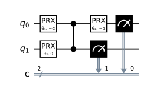
In hardware, the phase of each pulse, microwave or laser, is measured against a reference clock in the control electronics, and a virtual \(Z\) gate shifts that reference for all later pulses on the qubit. It is an instruction to the electronics, carried out instantly and exactly, so \(Z\) rotations take no time and add no error. When we estimate the error of a circuit, only the other gates count.
The same trick makes every single-qubit gate cost a single pulse. Write the gate as \(R_Z(\alpha)\,R_Y(\beta)\,R_Z(\gamma)\), note that \(R_Y(\beta) = \gate{PRX}(\beta, \pi/2)\), and move \(R_Z(\gamma)\) past the pulse with Equation 1.7: \[ R_Z(\alpha)\,R_Y(\beta)\,R_Z(\gamma) = R_Z(\alpha+\gamma)\,\gate{PRX}(\beta, \pi/2-\gamma). \] That is one pulse, followed by a \(Z\) rotation that is virtual.
Exercise 1.4 (Virtual Z gates)
Show that \(R_Z(\alpha)\, X\, R_Z(\alpha)^\dagger = \cos\alpha\, X + \sin\alpha\, Y\) and \(R_Z(\alpha)\, Y\, R_Z(\alpha)^\dagger = \cos\alpha\, Y - \sin\alpha\, X\).
Hint
Use Exercise 1.3 (a) with \(P = Z\).
Write the Hadamard gate, up to a global phase, as a single \(\gate{PRX}\) pulse followed by a \(Z\) rotation.
Hint
Write the Hadamard gate as \(R_Z(\alpha)\,R_Y(\beta)\,R_Z(\gamma)\) first, then use Equation 1.7.
1.3.6 Connectivity
A native two-qubit gate is available only between qubits that are physically coupled. The coupling graph of a device records which pairs these are. Its vertices are the qubits, and an edge joins two qubits if a native two-qubit gate can act on them (Figure 1.10).
On a superconducting chip, the coupling graph is fixed when the chip is made. In a square lattice, used by Google, IQM and IBM’s newest devices, each qubit has up to four neighbours. IBM’s heavy-hex lattice, used on most of its current devices, gives each qubit only two or three, which reduces unwanted interactions between qubits but lengthens the routes between distant ones. Some IQM devices use a star layout, in which every qubit couples to a central resonator, a circuit element that can take over the state of one qubit and pass it on to another; in Figure 1.10 it is drawn as an extra vertex.
In a trapped-ion chain, every ion couples to the same phonon bus, so every pair can interact and the coupling graph is complete. Devices that move ions between zones achieve the same by bringing any two ions together.

What if a circuit needs a two-qubit gate between qubits that are not neighbours? Their states must first be brought together with SWAP gates, which exchange the states of two neighbouring qubits, and each SWAP costs three CNOTs (Figure 1.11). A gate between distant qubits can therefore cost many extra two-qubit gates (Exercise 1.5). Two-qubit gates are the main source of error on current devices (Section 1.5), so connectivity directly limits which circuits a device can run reliably.
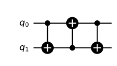
In practice, nobody inserts SWAPs by hand. Transpilation maps a circuit onto the native gates and coupling graph of a device. It chooses which physical qubit plays the role of each qubit in the circuit, inserts SWAPs where needed, and simplifies the result. We return to its cost in later chapters.
Exercise 1.5 (The cost of distance)
Check Figure 1.11 on the four computational basis states.
We want to implement a CNOT between the qubits at opposite ends of a line of \(n\) qubits. If the qubits may stay in their new positions after the operation, how many CNOTs are needed? And if they must be returned to their original positions?
Hint
Each SWAP moves a state one step along the line.
Exercise 1.6 (SWAP from native gates) On a device whose native gates are \(\gate{PRX}\) and CZ, a SWAP must be built from these.
Let \(A\) be a single-qubit unitary. Show that \((I\otimes A)\,\gate{CZ}\,(I\otimes A^\dagger)\) applies \(AZA^\dagger\) to the second qubit if the first is in \(\ket{1}\), and does nothing if it is in \(\ket{0}\).
Hint
Write \(\gate{CZ} = \ket{0}\bra{0}\otimes I + \ket{1}\bra{1}\otimes Z\).
Find a \(\gate{PRX}\) rotation \(A\) with \(AZA^\dagger = X\), and write a CNOT as one CZ and two \(\gate{PRX}\) gates.
Hint
Exercise 1.3 (b) gives a suitable \(A\).
Using Figure 1.11, write a SWAP with three CZs and \(\gate{PRX}\) gates only. How many \(\gate{PRX}\) pulses does it need?
1.4 Measurement
1.4.1 Readout
On superconducting devices, each qubit is coupled to a small resonant circuit, its readout resonator, whose frequency shifts slightly depending on whether the qubit is in \(\ket{0}\) or \(\ket{1}\). To measure, the electronics send a weak microwave pulse to the resonator and decide between 0 and 1 from the signal that comes back (dispersive readout). This takes about a microsecond. On trapped ions, a laser beam is tuned so that an ion in one qubit state scatters light and appears bright, while an ion in the other state stays dark. A camera or photon detectors count the light from each ion, and this fluorescence readout takes from a hundred microseconds to a millisecond.
On both platforms, a measurement returns one bit per qubit, in the computational basis (Section 1.2.1). It projects each qubit onto \(\ket{0}\) or \(\ket{1}\), and measuring in another basis means first rotating that basis onto the computational basis.
1.4.2 Shots and expectation values
A single run of a circuit, from preparing the qubits to measuring them, is called a shot. It returns one bit string, drawn at random from the distribution given by the Born rule, so to learn anything quantitative we repeat the circuit many times.
Most quantities in this course are expectation values \(\langle P\rangle\) of Pauli strings. To estimate one, we rotate each qubit so that its factor of \(P\) becomes \(Z\) (nothing for \(Z\), a Hadamard for \(X\), and \(R_X(\pi/2)\) for \(Y\)), and measure. A \(Z\) measurement with outcome bit \(b\) corresponds to the eigenvalue \((-1)^b\) of \(Z\), so the outcome of \(P\) is the product of these signs over the qubits on which \(P\) acts: \[ s = (-1)^{\sum_{j:\, P_j \neq I} b_j} = \pm 1 . \] For \(P = ZZ\), for example, \(s = +1\) if the two bits agree and \(s = -1\) if they differ. The average of \(s\) over \(N\) shots, \[ \bar s = \frac{1}{N} \sum_{k=1}^{N} s_k , \tag{1.8}\] is our estimate of \(\langle P\rangle\). A rule like this, which turns data into an estimate, is called an estimator.
1.4.3 Shot noise
How many shots does an estimate need? Each shot gives \(s = +1\) or \(s = -1\) at random, and the expectation value of \(s\) is \(\langle P\rangle\). The sample mean \(\bar s\) of Equation 1.8 is therefore correct on average, or unbiased. Its random error comes from the spread of single shots. Since \(s^2 = 1\) for every shot (this is \(P^2 = I\) again), the variance of a single shot is \[ \mathrm{Var}(s) = \langle s^2\rangle - \langle s\rangle^2 = 1 - \langle P\rangle^2 . \] The mean of \(N\) independent samples has \(1/N\) times the variance of a single sample (for a refresher on this and other basic statistics, see Blitzstein and Hwang (2019)). The typical size of the random error of \(\bar s\), its standard error, is therefore \[ \sigma_{\bar s} = \sqrt{\frac{1-\langle P\rangle^2}{N}} . \tag{1.9}\] In practice \(\langle P\rangle\) is unknown, and we evaluate Equation 1.9 with \(\bar s\) in its place.
The error is largest when \(\langle P\rangle = 0\), where every shot is a coin flip, and vanishes when \(\langle P\rangle = \pm 1\), where every shot gives the same result. It decreases only as \(1/\sqrt{N}\), so each extra digit of precision costs a hundred times more shots. To estimate an expectation value near zero with a standard error of 0.01, for example, we need \(N = 1/0.01^2 = 10^4\) shots. Section 1.6 shows how long they take on each platform.
Shot noise is one of two kinds of error in an estimated expectation value. Noise in the device (Section 1.5) also shifts \(\langle P\rangle\) itself, usually towards zero, and more shots cannot remove that shift; they only estimate the shifted value more precisely. The next chapter separates these two kinds of error. Tutorial 1 practises Equation 1.8 and Equation 1.9 in code: open the T1 notebook in Colab.
1.5 Sources of noise
Every wire or laser beam used to control a qubit is also a way in for disturbances. This section describes in words what can go wrong; the next chapter goes deeper into the mathematical description of noise and its effects.
The most important effect is that an excited qubit loses its energy. Left alone, \(\ket{1}\) decays to \(\ket{0}\). This is the relaxation that initialises superconducting qubits between runs (Section 1.2.3), but during a computation it corrupts the state. In superconducting qubits, the energy is absorbed by tiny defects in the materials of the chip. The qubit levels of trapped ions hardly decay on their own, but the lasers used for gates occasionally knock an ion out of its qubit state.
A qubit can also lose its phase without losing energy. A superposition of \(\ket{0}\) and \(\ket{1}\) carries a relative phase between its two parts, and the qubit’s frequency sets how fast this phase turns. If the frequency fluctuates, for example because of fluctuating magnetic fields or electric charges near the qubit, the phase wanders, and the superposition gradually becomes a random mixture of \(\ket{0}\) and \(\ket{1}\). This is called dephasing. The time over which a qubit relaxes is called \(T_1\), and the time over which it dephases is called \(T_2\). These are the coherence times quoted for every device, and the next chapter defines them precisely.
A third kind of error is a gate that rotates by the wrong amount, because a pulse is slightly too long, too short or off axis, or because a laser’s intensity fluctuates. Unlike relaxation and dephasing, such coherent errors are systematic: the same gate makes the same mistake every time. Table 1.4 lists these effects together with the remaining ones.
| What happens | Example | Name in the next chapter |
|---|---|---|
| \(\ket{1}\) decays to \(\ket{0}\) | energy absorbed by defects in the chip | relaxation (\(T_1\)) |
| the relative phase of a superposition wanders | fluctuating magnetic fields | dephasing (\(T_2\)) |
| a gate rotates by the wrong amount | a pulse slightly too long | coherent error |
| the qubit leaves the qubit levels | a pulse pushes a transmon into its third level (Figure 1.2) | leakage |
| an operation on one qubit disturbs another | couplings that are never fully off; a laser beam that partly hits the next ion | crosstalk |
| the readout is wrong | 0 reported as 1, or the reverse | readout error |
| many qubits fail at once | a cosmic ray deposits energy in the chip and disturbs all qubits nearby | correlated errors |
| the device drifts | properties that change over hours | (recalibration) |
The last row explains why providers recalibrate their devices regularly and publish calibration data, the error rates of each qubit and gate at the last calibration. These data are a snapshot, and a few hours later the device may behave differently.
Providers summarise the quality of each operation by a fidelity. For now, read it as one minus the probability that the operation goes wrong; the next chapter gives the precise definition. Typical values on current devices are 99.9-99.99% for single-qubit gates, 99-99.9% for two-qubit gates and 96-99.9% for readout, so two-qubit gates and readout are the weakest links.
1.6 Timescales
Table 1.5 collects typical timescales of current devices. They vary between devices and improve every year, so read them as orders of magnitude.
| Time per | Superconducting | Trapped ions |
|---|---|---|
| single-qubit gate | 20-60 ns | 10-150 µs |
| two-qubit gate | 20-700 ns | 50 µs-1 ms |
| readout | 0.5-2.5 µs | 0.1-1 ms |
| coherence (\(T_2\)) | 20-350 µs | about 1 s or more |
| shot (reset, circuit, readout) | 0.3-4 ms | 10 ms to several seconds |
| switching to a new circuit | much longer than a shot, plus any queue | the same |
The coherence time divided by the two-qubit gate time is between about a thousand and ten thousand on both platforms, although their speeds differ by a factor of about a thousand. Both platforms thus meet DiVincenzo’s requirement of coherence times that are long compared with gate times (Section 1.2.1), by a similar margin and in opposite ways: superconducting qubits with fast gates, trapped ions with long coherence. Coherence alone would allow circuits of thousands of gates in sequence. In practice, gate errors of 0.1-1% per two-qubit gate limit useful circuits much earlier.
Where the time goes differs between the platforms. On superconducting devices, the gates are fast, and most of a shot is spent measuring the qubits and resetting them to \(\ket{0}\); devices run hundreds to thousands of shots per second. Switching to a different circuit costs much more, since the circuit must be compiled and loaded into the control electronics, and on a shared cloud device it may wait in a queue. Many shots of one circuit are cheap; many different circuits are expensive. On trapped ions, the gates themselves are slow, and each shot also includes cooling the ions and, on some devices, moving them between zones, which takes most of the time. There, the number of shots is the main cost. For the \(10^4\) shots of the example in Section 1.4.3, this means between a few seconds and a minute on a superconducting device, and from a few minutes to several hours on an ion trap.
Exercise 1.7 (A shot budget)
How many shots give a standard error of 0.01 when \(\langle P\rangle \approx 0.9\)? Compare with \(\langle P\rangle \approx 0\).
Hint
Solve Equation 1.9 for \(N\).
You need ten expectation values, each from its own circuit, each with a standard error of at most 0.005. Assume the worst case, \(\langle P\rangle = 0\). Estimate the total time on a superconducting device and on an ion trap. Which part of the time dominates on each?
Hint
Use the times per shot and per circuit of Table 1.5.
1.7 More exercises
These exercises combine material from several sections of the chapter.
Exercise 1.8 (An error budget) A device has the native gates \(\gate{PRX}\) and CZ, with virtual \(Z\) rotations. Its operations fail independently, with probability \(10^{-4}\) for a \(\gate{PRX}\) pulse, \(5\times10^{-3}\) for a CZ and \(10^{-2}\) for a measurement. On a line of 10 qubits, we run a brick-wall circuit: each layer applies \(R_Z\) and \(R_X\) to every qubit, followed by CZs between neighbouring qubits, on the pairs (1,2), (3,4), … in odd layers and (2,3), (4,5), … in even layers. Figure 1.12 shows two layers on four qubits. The circuit has 8 layers and ends by measuring all qubits.

Count the native operations of each kind, and estimate the probability that a run of the circuit has no error at all. Which kind of operation contributes most to the failures?
Hint
Which gates in Figure 1.12 need a pulse?
How does the answer to (a) change on a device without virtual \(Z\) rotations, where each \(R_Z\) needs a pulse with the same error as \(\gate{PRX}\)?
Roughly how many layers can the circuit have before the probability of a run without error drops below one half?
Hint
\((1-p)^n \approx e^{-np}\) for small \(p\).
Exercise 1.9 (Readout errors bias the estimate) Suppose that the readout of each qubit reports the wrong bit with probability \(p\), independently in every shot and for both outcomes.
Show that the recorded sign \(s\) of a single-qubit \(Z\) measurement has expectation value \((1-2p)\langle Z\rangle\).
For a Pauli string \(P\) acting on \(k\) qubits, show that the recorded sign has expectation value \((1-2p)^k\langle P\rangle\).
Hint
The recorded sign is the true sign times one independent factor \(\pm 1\) per qubit.
Take \(p = 0.02\), \(k = 4\) and \(\langle P\rangle = 0.5\). Compare the bias of \(\bar s\) with its standard error for \(N = 10^3\) and for \(N = 10^5\) shots. When do more shots stop helping?
Hint
The standard error is given by Equation 1.9.
If \(p\) is known, how can the estimate be corrected? What does the correction do to the standard error?
Exercise 1.10 (Measuring in other bases) A device has the native gates \(\gate{PRX}\) and CZ, and measures in the computational basis.
Which \(\gate{PRX}\) pulses must be applied before the measurement to estimate \(\langle X\otimes Y\otimes Z\rangle\)?
Hint
On each qubit, you need a rotation \(U\) with \(U P_j U^\dagger = Z\); see Exercise 1.3.
Can \(\langle X\otimes I\rangle\) and \(\langle X\otimes X\rangle\) be estimated from the same shots? And \(\langle X\otimes X\rangle\) and \(\langle Z\otimes Z\rangle\), if only single-qubit rotations are allowed before the measurement?
1.8 Further reading
For superconducting qubits, Krantz et al. (2019) is a thorough guide written for engineers; for trapped ions, see Bruzewicz et al. (2019). Henriet et al. (2020), Slussarenko and Pryde (2019) and Burkard et al. (2023) review neutral atoms, photonics and spin qubits. Preskill (2018) introduced the NISQ era, and Nielsen and Chuang (2010, chap. 4) covers the circuit model.